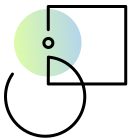

<section class="focus-areas" id="focus">
    <div class="container focus-areas__wrap">
        <h2 class="focus-areas__header-h2 header-h2">GenAI Workshop Focus Areas</h2>
        <p class="focus-areas__content content">We've guided leaders across 10+ industries through the GenAI journey,
            from Retail to Financial Services</p>
        <div class="focus-areas__wrap__content">
            <div class="group-items_wrap">
                <div class="focus-areas__wrap__content-item">
                    
                    <h4 class="focus-areas__content-header-h4 header-h4">Veracity & Hallucination Mitigation</h4>
                    <p class="focus-areas__content-description content">Ensure AI reliability at scale. Our solutions
                        implement advanced fact-checking and knowledge retrieval systems, minimizing hallucinations in
                        GenAI outputs. We fine-tune models to reduce false information, protecting your brand integrity
                        and maintaining stakeholder trust.</p>
                </div>
                <div class="focus-areas__wrap__content-item">
                    
                    <h4 class="focus-areas__content-header-h4 header-h4">Data Privacy & Security</h4>
                    <p class="focus-areas__content-description content">Safeguard your data assets. In today's
                        regulatory landscape, our GenAI solutions incorporate robust privacy-preserving techniques. With
                        federated learning and differential privacy, we ensure your sensitive information remains
                        protected while leveraging AI capabilities.</p>
                </div>
            </div>
            <div class="group-items_wrap">
                <div class="focus-areas__wrap__content-item">
                    
                    <h4 class="focus-areas__content-header-h4 header-h4">Scalability & Performance Optimization</h4>
                    <p class="focus-areas__content-description content">Build AI for enterprise growth. Our solutions
                        are engineered for high throughput and low latency, efficiently handling enterprise-scale data
                        and user loads. We optimize model inference and implement distributed computing to ensure
                        consistent performance as your AI needs expand.</p>
                </div>
                <div class="focus-areas__wrap__content-item">
                    
                    <h4 class="focus-areas__content-header-h4 header-h4">Seamless Integration & Customization</h4>
                    <p class="focus-areas__content-description content">Align AI with your ecosystem. We integrate GenAI
                        solutions to work in harmony with your existing enterprise infrastructure. Our custom APIs and
                        connectors ensure smooth interaction with your tech stack, from CRM systems to data warehouses,
                        enhancing efficiency across your organization.</p>
                </div>
            </div>
        </div>
    </div>
</section>